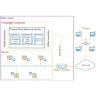

|
Kiarash Soleimanzadeh (pronounced 'kee-aw-rahsh solei-man-za-deh') I am incredibly interested in machine/deep learning, computer vision, image/signal analysis, large language models, multimodal learning, natural language processing, and data analysis to improve quality of life.
I am not only a highly self-motivated, self-taught, creative, hard-working, and problem-solver student but also a researcher, software engineer, and a science enthusiast. If I am not developing codes, I am somewhere else, thinking about novel research ideas. Also, my free time is dedicated to hiking, camping, cooking, cycling, reading, swimming, and listening to music. These works are my daily schedules, so feel free to ask for anything related. Please check out my blog, it is my pleasure. |

|
Education
Razi University (2014-2018)
Malayer University (2009-2014)
|
ResearchI'm interested in applications of computer engineering and computer science in healthcare (smart-healthcare) and natural language processing.Representative sections/papers are highlighted. |
|

|
Kiarash Soleimanzadeh, Mahmood Ahmadi, Mohammad Nassiri ETRI Journal, 2019 bibtex / PDF A smart method to balance requests/loads among servers in data centers. |
|
Feel free to steal this website's source code. |